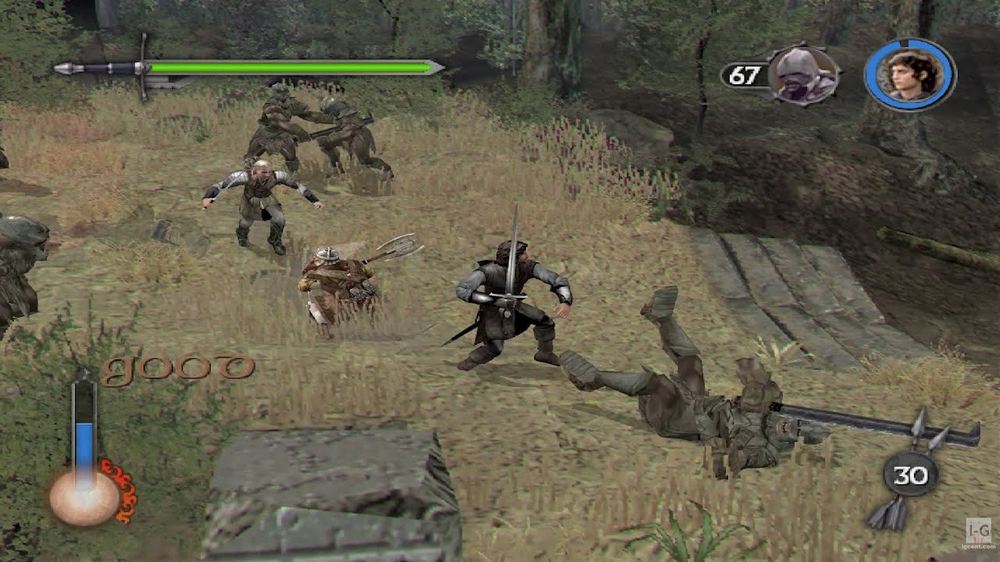
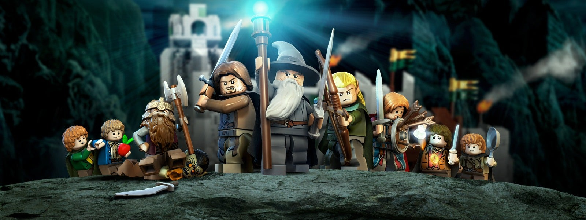
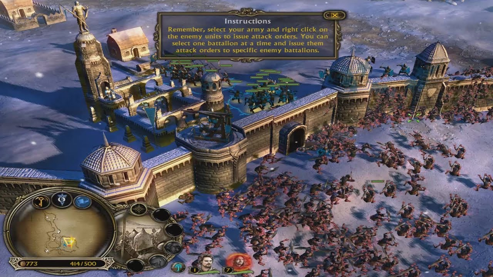
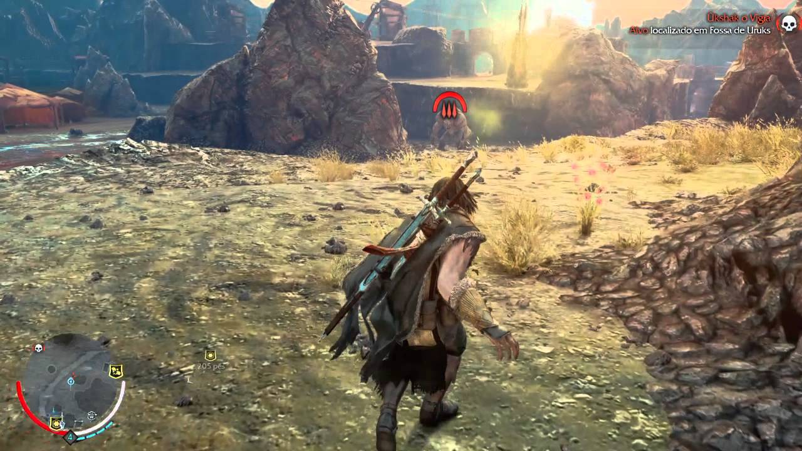

The Lord Of The Rings: Adventure Card Game
Se The Witcher pode ter Gwent, O Senhor dos Anéis pode ter
seu
card game também. O jogo se passa entre os eventos de O Hobbit e A Sociedade do Anel, com um
sistema parecido com o de outros jogos no mesmo estilo, como Heartstone. Com um modo
campanha e
a possibilidade de jogar de forma cooperativa, você pode encarar as mais variadas missões e
utilizar personagens clássicos da Terra Média no seu deck de cartas.
The Lord Of The Rings: Adventure Card Game está disponível para PC, mac, PlayStation 4,
Xbox
One
e Nintendo Switch.

Lord of The Rings: The Two Towers e Return of the King
Durante o lançamento dos filmes de Peter Jackson, uma
trilogia
de jogos foi lançada em paralelo. O primeiro jogo é, digamos, bem duvidoso. Mas, os games
baseados em As Duas Torres e O Retorno do Rei são sensacionais. Usando o visual dos longas
de
sucesso, além das vozes dos atores originais, a adaptação feita pela Electronic Arts é
considerada por muitos, até hoje, uma das transposições mais fiéis de filmes no mundo dos
games.
Em uma época em que jogos baseados em filmes eram recorrentes, os dois games de O Senhor dos
Anéis foram um ponto fora da curva no quesito qualidade.
The Lord of the Rings: The Two Towers e The Lord of the Rings: The Return of the King
contam
com
versões para PlayStation 2 e Xbox.

LEGO Lord of the Rings
Com um bom humor característico das adaptações de LEGO, o
jogo
é uma experiência maravilhosa, colocando os jogadores para encarnar personagens como Frodo,
Gandalf e Aragorn em cenários todos recriados em bloquinhos com ações interativas pelo mapa.
Diferente de muitos jogos de ação envolvendo O Senhor dos Anéis, a versão LEGO segue à risca
os
acontecimentos dos filmes, colocando o jogador para controlar até mesmo os pequenos Hobbits,
que
algumas vezes ficam de fora dos games que focam em combate.
LEGO Lord of the Rings está disponível para Android, iOS, PC, Nintendo 3DS, Nintendo DS,
PlayStation 3, PlayStation Vita, Wii e Xbox 360.

The Lord of The Rings: The Battle For Middle Earth 2
Um dos fortes em O Senhor dos Anéis sempre foram as
batalhas.
Seja em Abismo de Helm ou Minas Tirith, os grandes combates são cheios de emoção e ação.
Battle
For Middle Earth 2 coloca o jogador para engajar em confrontos usando tanto as tropas de
Sauron,
quanto elfos, anões e humanos. Se você sempre quis comandar os cavaleiros de Rohan em
batalha,
essa pode ser a sua pedida principal.
The Lord of The Rings: The Battle For Middle Earth 2 está disponível para PC.

Terra-Média: Sombras de Mordor
Com uma história completamente original no universo de
Tolkien,
você controla um dos patrulheiros de Gondor, chamado Talion, que perde sua família para o
exército de Sauron. Até que é ressuscitado por Celebrimbor, o elfo responsável por forjar os
anéis do poder que busca vingança contra Sauron. Usando suas habilidades como guerreiro e o
poder sobrenatural que recebe pelo contato com Celebrimbor, Talion começa seu plano de
vingança
contra o maior vilão da Terra Média. O jogo também inovou o gênero ao trazer o Sistema
Nêmesis,
em que você pode recrutar Orcs de diferentes hierarquias e montar um exército de
aliados.
Terra-Média: Sombras de Mordor está disponível para PC, PlayStation 3, Xbox 360,
PlayStation
4,
Xbox One e mac.